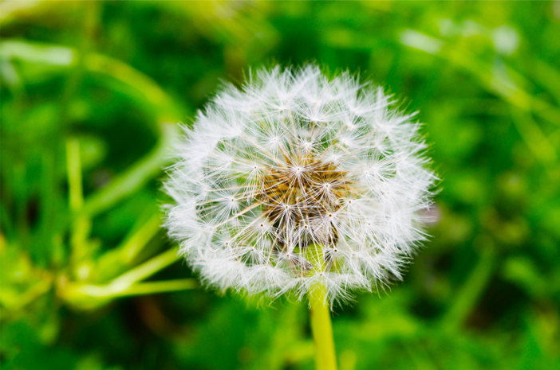

Bunga Dandelion

Dandelion: Si Bunga Liar yang Penuh Keajaiban
Dandelion adalah bunga liar yang tampak sederhana, namun menyimpan banyak manfaat dan makna simbolik. Bunga ini dikenal karena bentuknya yang menyerupai bola kapas saat benihnya matang, dan mudah tertiup angin.
Fakta Singkat Dandelion
- Nama Ilmiah : Taraxacum officinale
- Famili : Asteraceae (keluarga bunga matahari)
- Asal : Eropa dan Asia, kini tersebar hampir di seluruh dunia
- Jenis : Termasuk tumbuhan gulma/tanaman liar
- Ciri Khas : Benihnya tersebar melalui angi
Penyebaran yang Unik
Benih dandelion sangat ringan dan memiliki struktur seperti parasut kecil. Saat tertiup angin, benih-benih ini bisa terbang jauh untuk tumbuh di tempat baru. Inilah yang membuat dandelion cepat menyebar di padang rumput, taman, dan bahkan celah-celah trotoar.
Ciri-Ciri Bunga Dandelion
- Bunga : Kecil, berwarna kuning cerah saat mekar
- Benih : Setelah mekar, berubah menjadi bola putih berisi biji dengan rambut halus (seperti kapas)
- Batang :Berongga dan tidak bercabang
- Daun : Bergerigi seperti gigi singa (nama “dandelion” berasal dari bahasa Prancis dent de lion, artinya “gigi singa”)
Manfaat Dandelion
- Pengobatan Herbal (Akar, daun, dan bunganya) digunakan untuk:
- Detoksifikasi hati
- Menurunkan tekanan darah
- Membantu pencernaan
- Kuliner
- Daunnya bisa dimakan seperti sayur salad
- Akar dandelion bisa disangrai dan dijadikan pengganti kopi herbal
- Lingkungan
- Menarik lebah dan serangga penyerbuk lainnya
- Mencegah erosi tanah dengan akarnya yang kuat
Makna Simbolis Dandelion
Dandelion sering dijadikan simbol :
- Harapan : Karena benihnya diterbangkan oleh angin, seperti harapan yang dikirim ke alam semesta
- Kebebasan dan impian : Anak-anak sering meniup dandelion sambil membuat permohonan
- Ketahanan : Mampu tumbuh di tempat sulit, seperti celah batu atau tanah tandus
Apakah Dandelion Gulma?
Ya, di beberapa tempat (terutama taman dan lahan pertanian), dandelion dianggap gulma karena tumbuh liar dan sulit dikendalikan. Namun, di sisi lain, banyak orang juga menganggapnya sebagai tanaman herbal yang bermanfaat.Gulma adalah tumbuhan liar yang tumbuh di tempat yang tidak diinginkan dan sering mengganggu tanaman utama yang sedang dibudidayakan.
Persebaran Global
Dandelion kini tumbuh hampir di seluruh dunia, terutama di daerah beriklim sedang :
- Eropa
- Asia
- Amerika Utara
- Australia
Dandelion adalah contoh sempurna dari keindahan dalam kesederhanaan. Walau sering dianggap liar, bunga ini memiliki filosofi yang dalam, manfaat kesehatan, dan keindahan alam yang tak lekang oleh waktu.